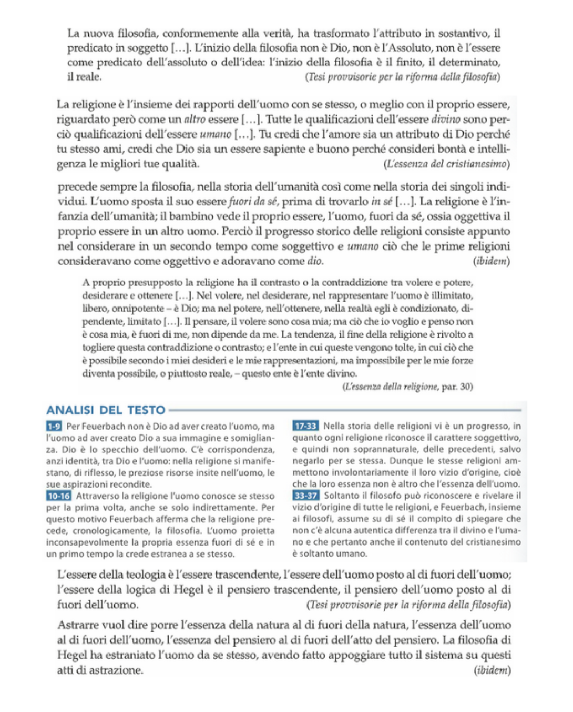

3 Ludwig Feuerbach
3.1 Dialettica e Religione
Feuerbach, discepolo critico di Hegel1, si distingue per la sua analisi della religione. Le sue opere principali indagano il fenomeno religioso e il suo legame con l’umanità.
1 Incompreso dai contemporanei, il suo pensiero non fu ufficialmente accettato.
3.2 Vita
Filosofo tedesco della Germania del Nord, Feuerbach fu educato nel solco dell’hegelismo ma adottò una posizione apertamente atea. In un contesto accademico conservatore, la sua carriera universitaria fu ostacolata. Visse grazie all’eredità della moglie, ma dopo la sua morte cadde in povertà e morì senza il riconoscimento che avrebbe meritato.
3.3 Opere
Critica alla filosofia hegeliana
Tesi provvisorie per la riforma della filosofia
I principi della filosofia dell’avvenire
L’essenza del cristianesimo
L’essenza della religione
Le opere di Feuerbach si dividono in opere critiche sulla religione e opere poco precise e sistematiche sulla nuova filosofia da fondare. Nella critica è molto preciso, e infatti i due libri più significativi sono L’essenza del cristianesimo e L’essenza della religione, invece, nella parte propositiva in cui dice che la filosofia deve sostituire la religione è più episodico.
3.4 Il rovesciamento dei rapporti di predicazione
Feuerbach inverte la prospettiva idealista: l’essere concreto è il soggetto, mentre il pensiero è il predicato. Hegel e l’idealismo sostenevano il contrario. Feuerbach critica questa visione e propone un capovolgimento radicale del rapporto tra essere e pensiero.
3.5 Critica alla religione – Dio come proiezione dell’uomo
Applicando il materialismo alla religione, Feuerbach sostiene che Dio è una proiezione delle qualità umane. L’uomo aliena inconsapevolmente le proprie caratteristiche positive, attribuendole a una divinità esterna. Il concetto di alienazione, ripreso da Hegel, descrive questo processo: come un bambino che non riconosce la propria immagine allo specchio, l’uomo non riconosce se stesso in Dio.
L’idea di Dio nasce dalla coscienza dell’uomo come specie: individualmente è debole, ma come specie si sente infinito e onnipotente, proiettando queste qualità in una figura divina. L’opposizione tra volere e potere rafforza questa costruzione2.
2 Le divinità greche erano limitate perché riflettevano desideri contenuti, mentre il Dio cristiano è onnipotente poiché riflette desideri illimitati.
3 La missione del filosofo è smascherare questa alienazione e sostituire la religione con la filosofia.
La religione è una forma di alienazione patologica: l’uomo proietta il proprio potere su Dio e si sottomette a esso. L’ateismo diventa quindi un dovere morale, recuperando in sé le qualità trasferite a Dio3.
3.6 Critica di Marx
Marx riprende Feuerbach ma sposta il concetto di alienazione dal pensiero alla realtà economico-sociale. Mentre per Feuerbach la liberazione avviene con la consapevolezza filosofica, per Marx dipende dal miglioramento delle condizioni materiali.
3.7 Cristianesimo e alienazione religiosa
Feuerbach interpreta il cristianesimo come il prodotto della coscienza alienata dell’uomo. Il segreto della teologia è l’antropologia: Dio non è altro che l’essenza umana proiettata all’esterno, un’oggettivazione inconsapevole delle qualità umane in un ente astratto4. Pur criticando le religioni precedenti, l’uomo non comprende che lo stesso vale per il cristianesimo. Tuttavia, la religione prepara il terreno per la filosofia, poiché introduce concetti poi rielaborati in chiave razionale.
4 L’uomo non si rende conto che la religione è solo una sua creazione e la vive come fosse reale, proprio come un bambino che non riconosce la propria immagine nello specchio.
3.8 La Critica a Hegel
Se la religione è un’antropologia capovolta, l’hegelismo è una teologia razionalizzata. Hegel ha tradotto speculativamente la tradizione teologica, rendendo il suo Spirito un’astrazione alienante, esattamente come il Dio cristiano. Poiché Hegel rappresenta il culmine della filosofia moderna, criticarlo significa inaugurare una nuova filosofia centrata sull’uomo e sulla sua esperienza immediata. Questa critica è condivisa anche da Kierkegaard, che vede in Hegel un pensatore essenzialmente teologico.
3.9 L’Umanesimo Naturalistico
Nella fase finale del suo pensiero, Feuerbach sviluppa un umanismo naturalistico:
Umanismo, perché pone l’uomo al centro della riflessione filosofica.
Naturalistico, perché riconosce la dipendenza dell’uomo dalla natura.
L’individuo non va inteso come pura razionalità astratta, ma come un essere concreto, fatto di carne e sangue, che soffre, gioisce e ha bisogni5. Un aspetto centrale di questo umanismo è l’amore, che per Feuerbach è la passione fondamentale capace di aprirci al mondo6.
5 Feuerbach critica Hegel per aver ridotto l’uomo alla sola razionalità, trascurando la sua realtà sensibile e individuale.
6 Contrariamente a Hegel, che lo vedeva solo in funzione riproduttiva, Feuerbach lo considera essenziale per l’esistenza: l’io non può esistere senza il tu. Questo porta a una filosofia che si risolve in filantropia:
Dall’amore per Dio, all’amore per l’uomo.
Dalla fede in Dio, alla fede nell’umanità.
Dalla trascendenza, all’immanenza.
L’ateismo di Feuerbach diventa così “positivo”, promuovendo un nuovo umanesimo. Sebbene si ispiri al materialismo illuministico, rifiuta sia la riduzione dell’uomo a un puro meccanismo fisiologico, sia la visione positivista della natura umana. Per lui, i sentimenti e le idee hanno una base fisica, ma non possono essere ridotti esclusivamente al corpo.
